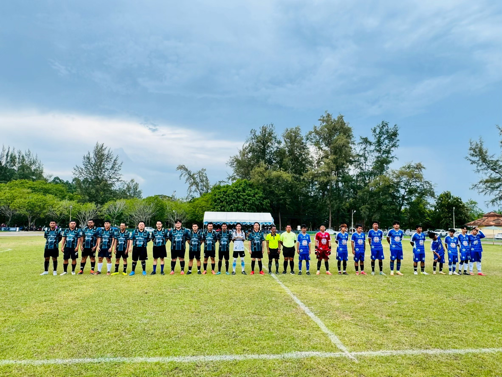

การแข่งขันกรีฑา ชิงชนะเลิศจังหวัดหนองคาย
⌖ หนองคาย
 ราชยานยนต์สมาคมแห่งประเทศไทย
ราชยานยนต์สมาคมแห่งประเทศไทย
 สมาคมกีฬากระดานโต้คลื่นแห่งประเทศไทย
สมาคมกีฬากระดานโต้คลื่นแห่งประเทศไทย
 สมาคมกีฬากรีฑาแห่งประเทศไทย
สมาคมกีฬากรีฑาแห่งประเทศไทย
 สมาคมกีฬากอล์ฟอาชีพแห่งประเทศไทย
สมาคมกีฬากอล์ฟอาชีพแห่งประเทศไทย
 สมาคมกีฬากอล์ฟแห่งประเทศไทย
สมาคมกีฬากอล์ฟแห่งประเทศไทย
 สมาคมกีฬากาบัดดี้แห่งประเทศไทย
สมาคมกีฬากาบัดดี้แห่งประเทศไทย
 สมาคมกีฬากีฬาไทยแห่งประเทศไทย
สมาคมกีฬากีฬาไทยแห่งประเทศไทย
 สมาคมกีฬาขี่ม้าแห่งประเทศไทย
สมาคมกีฬาขี่ม้าแห่งประเทศไทย
 สมาคมกีฬาขี่ม้าโปโลแห่งประเทศไทย
สมาคมกีฬาขี่ม้าโปโลแห่งประเทศไทย
 สมาคมกีฬาคริกเก็ตแห่งประเทศไทย
สมาคมกีฬาคริกเก็ตแห่งประเทศไทย
 สมาคมกีฬาคอร์ฟบอลแห่งประเทศไทย
สมาคมกีฬาคอร์ฟบอลแห่งประเทศไทย
⌖ หนองคาย
⌖ เชียงราย
⌖ สุพรรณบุรี
⌖ นครราชสีมา
⌖ สุพรรณบุรี
⌖ สระบุรี
⌖ สิงห์บุรี
⌖ สิงห์บุรี
กิจกรรมกีฬาที่ผ่านการประเมินการจัดงานอย่างยั่งยืน เป็นมิตรต่อสิ่งแวดล้อม และส่งเสริมสุขภาพชุมชน
แพลตฟอร์มข้อมูลกีฬาระดับประเทศ
เชื่อมโยงผู้คน พื้นที่ และโอกาสผ่านข้อมูลจริง
เราไม่ได้เพียงรวบรวมข้อมูลกีฬา
เรา ทำให้ทั้งประเทศ
ทำให้ทั้งประเทศ
มองเห็นและเข้าถึงได้
ข้อมูลสถานที่กีฬาเชื่อมโยงครบทั้ง 77 จังหวัด จากเหนือจรดใต้ในฐานข้อมูลเดียวกัน
เลือกเส้นทางที่สนใจ ทุกหมวดเชื่อมกลับมาที่ฐานข้อมูลกีฬาไทยชุดเดียวกัน
หลักสูตรฝึกอบรมจากกระทรวงการท่องเที่ยวและกีฬา เพื่อยกระดับมาตรฐานผู้ฝึกสอน ผู้ตัดสิน และบุคลากรกีฬาทั่วประเทศ
ดูหลักสูตรทั้งหมด ↗สนาม ศูนย์ฝึก และพื้นที่ออกกำลังกายกระจายอยู่ในทุกภูมิภาค
กิจกรรมระดับชุมชน จังหวัด และประเทศ เชื่อมผู้คนเข้าหากันตลอดปี
